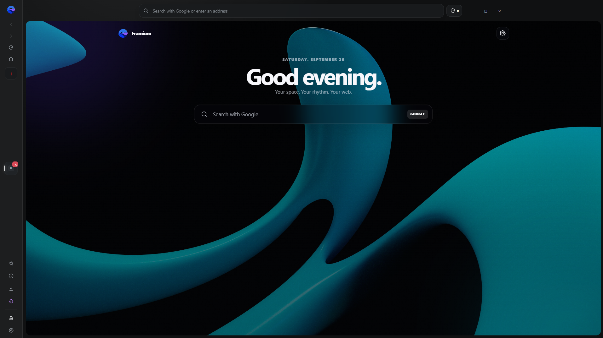
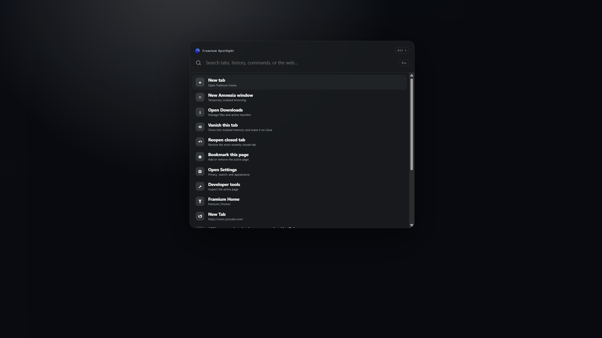

Your space, down to the atmosphere.
Use your own background, tune panel opacity and blur, rearrange widgets, and choose what deserves attention.
Open source · Version 0.4.0
Framium is a private, customizable Chromium browser shaped around focus — not noise. Vertical tabs, temporary spaces, a glass Home, and everything one shortcut away.
Windows installer · BSD 3-Clause · Built on Chromium
A focused interface keeps the web in front. Your spaces, tools, and private modes remain close without taking over the screen.

Use your own background, tune panel opacity and blur, rearrange widgets, and choose what deserves attention.

Press Alt + L to search tabs, bookmarks, history, browser commands, or the web from one centered launcher.
Open an isolated temporary tab inside your normal window. When its related tab group closes, Framium erases its cookies, storage, cache, permissions, history, and temporary download records.
Jump to a tab, revisit history, find a bookmark, run a browser command, or search the web without leaving your flow.
A completely isolated, non-persistent window that forgets its browsing data when closed.
Practical tabs, compact mode, hover-close controls, pinning, and drag-to-reorder in a calm sidebar.
Direct saves, progress controls, native file dragging, quick open, and optional save-location prompts.
Framium separates normal, Vanish, and Amnesia browsing into different session partitions. Temporary modes avoid normal history and restoration, then clear their browsing data when their session ends.
Download Framium 0.4.0 for Windows or explore every line of the open-source project on GitHub.
Download Framium Setup